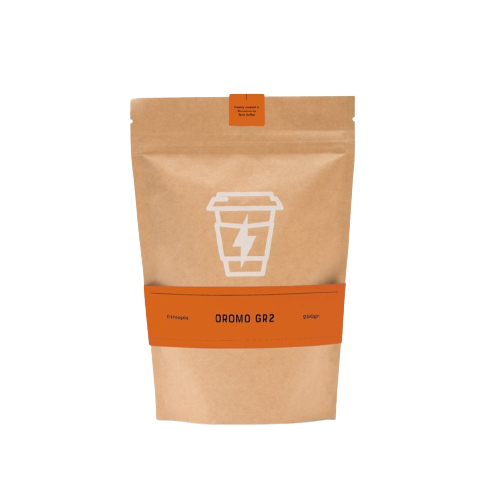

CAFE
KAMBATA
KETIARA
MOLINO
OROMO
SIDAMO
Hay dos cosas que necesitas para preparar una taza de café excepcional en tu casa o lugar de trabajo: Café de especialidad y una buena cafetera. Cada paso, desde el tostado hasta la preparación afecta al perfil de sabor del café. Por lo tanto es importante elegir tanto un specialty coffee que te guste como la cafetera adecuada para poder disfrutar plenamente del café.

Cafetera italiana
Alfonso Bialetti diseñó la única y original cafetera italiana en 1933. Un excelente ejemplo de Art Deco, comúnmente conocida como "Moka Pot",.
Prensa Francesa
Es un clásico que nunca pasa de moda. Otro plus es que no necesita electricidad ni productos extras como papel filtro. Si te gusta beber café de filtro y estás buscando una cafetera sencilla te podemos recomendar este método.
Hario v60
Ees al menos tan práctico como la prensa francesa. Para la elaboración de V60 necesitarás comprar cono V60, un servidor y papel filtro V60 que disponemos a precios asequibles en CanelaCO.
Molinillo de cafe
La mayor ventaja del molinillo de café es que te permite capturar la frescura en cada taza. El café molido se pondrá rancio más rápido que el café en grano. Sin embargo, si compras granos enteros de café y los mueles tanto cuando quieras, conservarás su frescura durante mucho tiempo.